10.30.2010 09:26
Design of School Desks
It was great to see this article on
slashdot:
Time To Rethink the School Desk?. Back in 1996, I took
Mechanical Engineering 101. For the final project, I ended up
working on a design for a school desk. Someday I should write up
that design. Here are some iphone shots of my design that aren't
the best, but do sort of show the concept.
A very blurry exploded view...
Some of the ideas leading up to the final design. My favorite is the desk that eats kids. Perfect for this Halloween weekend
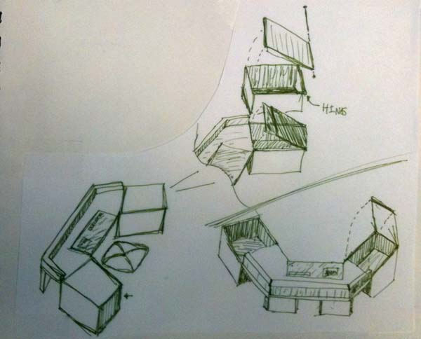
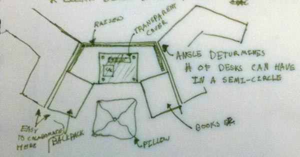
A very blurry exploded view...
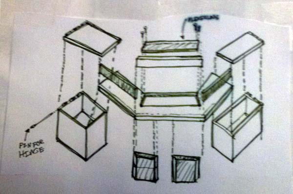
Some of the ideas leading up to the final design. My favorite is the desk that eats kids. Perfect for this Halloween weekend
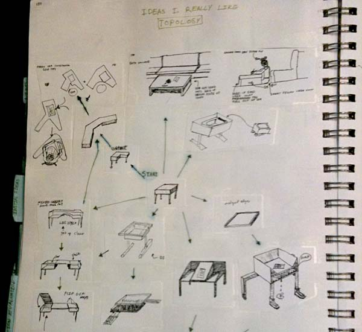
10.30.2010 09:09
Field Trip - Eastern MA
Margaret Boettcher, Jeanne Hardebeck,
Monica Wolfson, and I went along two weekends ago to the Boston
College 2010 ES-SSA Field Trip run my Yvette
Kuiper: "Fault-related rocks in eastern Masachusetts". We got
perfect weather for a great structural geology / seismology field
trip. I'm hoping to add more info about these stops later.
Pseudotachylite:
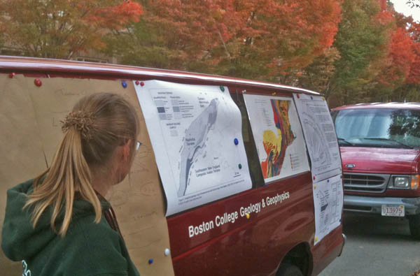
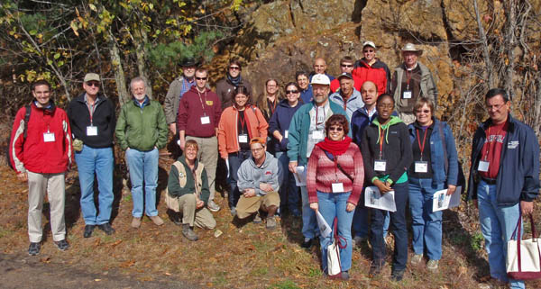
Pseudotachylite:
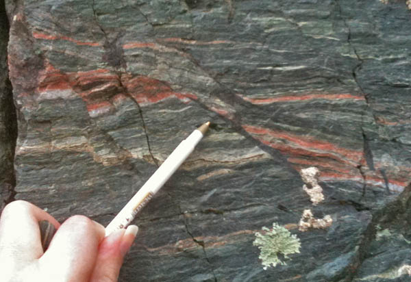
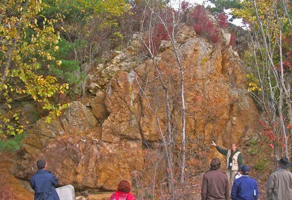
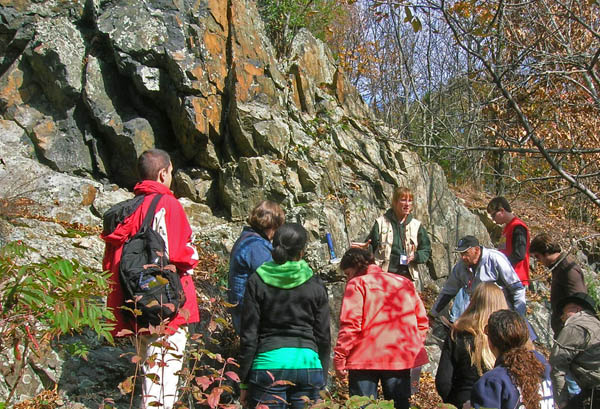
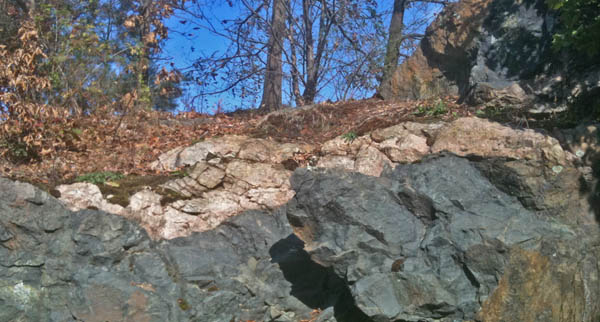
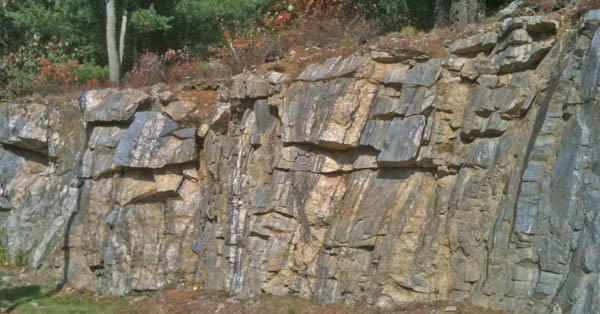
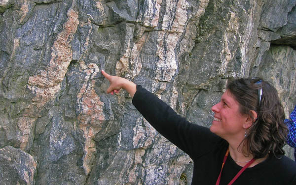
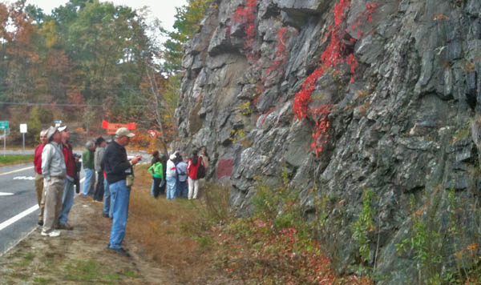
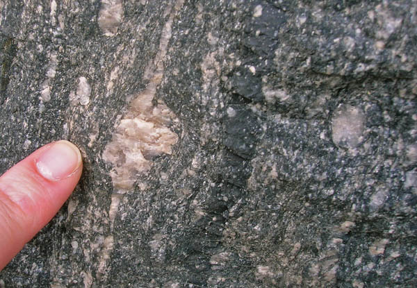
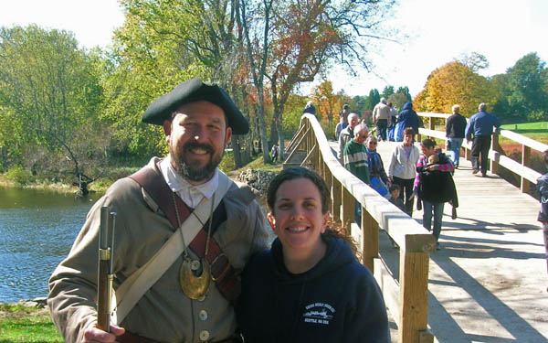
10.28.2010 10:36
UNH and the Deepwater Horizon
The UNH Magazine just put out this
article in the Fall 2010 edition about part of the UNH effort to
assist with teh Deepwater Horizon incident:
On Call As the disaster in the Gulf of Mexico unfolded, UNH's Coastal Response Research Center-and its director, Nancy Kinner '80G, '83G-became the go-to source for oil spill expertise
Don't forget about all the other contributions from CCOM, RCC, UNH Computational Facilities (not sure who exactly this is), nowCOAST and OCS NOAA staff who are based here with us at CCOM, and those who I don't even know about (email me if you know of other groups at UNH who helped out).
Also in the same issue is Award-Winner A UNH-built web site gave researchers and the public access to all the information they ever wanted to know about the Deepwater oil spill
On Call As the disaster in the Gulf of Mexico unfolded, UNH's Coastal Response Research Center-and its director, Nancy Kinner '80G, '83G-became the go-to source for oil spill expertise
Don't forget about all the other contributions from CCOM, RCC, UNH Computational Facilities (not sure who exactly this is), nowCOAST and OCS NOAA staff who are based here with us at CCOM, and those who I don't even know about (email me if you know of other groups at UNH who helped out).
Also in the same issue is Award-Winner A UNH-built web site gave researchers and the public access to all the information they ever wanted to know about the Deepwater oil spill
10.27.2010 17:51
Deepwater Horizon Talk
CCOM has taken to video taping talks.
Here is my most recent talk. The video was captured with an HD mini
camera. I'm not sure why the aspect ratio is wrong on vimeo.
Schwehr 2010 CCOM Seminar ERMA from ccom unh on Vimeo.
10.19.2010 16:49
GCN ERMA/GeoPlatform award
Sigh... this article could use some
corrections.
"The data is updated twice a day." That might be true for the main database push, but the WMS feeds are updating continuously. The ship positions from AIS are updated every 2 minutes.
And, ERMA was not created a "year ago". I've been working on ERMA since 2006.
This is the first I've heard about the FGDC's involvement. I am curious what that was all about.
How NOAA quickly developed an in-depth view of gulf oil spill
"The data is updated twice a day." That might be true for the main database push, but the WMS feeds are updating continuously. The ship positions from AIS are updated every 2 minutes.
And, ERMA was not created a "year ago". I've been working on ERMA since 2006.
This is the first I've heard about the FGDC's involvement. I am curious what that was all about.
How NOAA quickly developed an in-depth view of gulf oil spill
Geospatial Platform, with 600 data layers from multiple sources, provides a cross-agency template When the explosion of the Deepwater Horizon undersea oil well sent millions of gallons of oil spewing from the floor of the Gulf of Mexico April 20, the various responding agencies were pretty well set up to coordinate their response. But getting information to the public and scientific community was another matter. That's when Joseph Klimavicz, the National Oceanic and Atmospheric Administration's CIO, stepped in. "We had this ERMA application that had been developed about a year ago with the University of New Hampshire," said Klimavicz, referring to the Environmental Response Management Application, a Web-based geospatial tool designed to support interagency data sharing and Really Simple Syndication data feeds. "It supported the emergency response community. It was liked so much on the emergency response side, we said, âÄòWe have to move this to the public side.' " Because the application was already designed, the biggest hurdle in making it âÄî along with selected datasets âÄî available to the public was securing the approval of all the agencies and departments involved. ...It's definitely nice to get recognized.
10.19.2010 09:36
CleanGulf - DWH Lessons Learned
The web cast is underway. I will try
to find out where the video is being archived.
Free Webcast: The Gulf DH Spill
Update 2 hours later: I caught the last question after being at an ERMA meeting. I was very disappointed by what I heard at the end. The speaker was asked about the important of GIS during the response. He said that ESRI developed the GIS that was used in this response and that they integrated AIS with the system and provided a Flex viewer for display on the web. He basically said that I wasted several months working around the clock providing AIS support through ERMA. So now we have three groups saying that they provided *THE* main AIS support for the oil spill response. If I could have avoided the stress of participating in the spill response, I would have happily given up AIS. The pain that came with trying to manage and maintain the AIS state for the Gulf response was pretty crazy. I know the USCG was using Arc Globe Explorer (AGX) in West Virginia and sending me backup GeoRSS feeds in case my instance of the AISUser client went down, but it did not seem like outside groups could see the ESRI derived data. I certainly never pushed the GeoRSS through - my raw AIS decodes were easier to control and we provided the on-sight team a way to edit the response vessel database through a Django interface. The USCG did not have a system for the field personnel to control which vessels were on the response list being used in West Virginia. Before the spill, I had assumed that the primary tracking of vessels would be done by the USCG with MISLE or PAWS. What is really missing from oil spills is information pathways to keep all responders being aware of what is going on with information that is relevant to their task. I got hardly any feedback about AIS or vessel tracking and I doubt there were many people at the command centers that have any idea that it was me at UNH managing the AIS data going onto the ERMA displays. All I can say is that I know that ERMA screen shots went into the presidential briefing packets.
Free Webcast: The Gulf DH Spill
A free webcast (sponsored by The Response Group) will be broadcast live from the Clean Gulf Conference & Exhibition on Tuesday 19th October at 0930âÄì1130 EDT. The topic will be that of lessons learnt from the 2010 Gulf spill which occurred on 20th April with the explosion of TransoceanâÄôs Deepwater Horizon drilling rig.
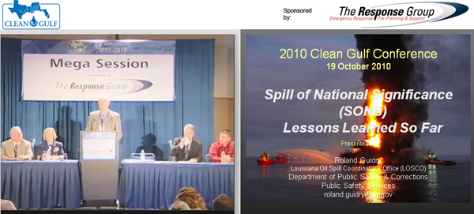
Update 2 hours later: I caught the last question after being at an ERMA meeting. I was very disappointed by what I heard at the end. The speaker was asked about the important of GIS during the response. He said that ESRI developed the GIS that was used in this response and that they integrated AIS with the system and provided a Flex viewer for display on the web. He basically said that I wasted several months working around the clock providing AIS support through ERMA. So now we have three groups saying that they provided *THE* main AIS support for the oil spill response. If I could have avoided the stress of participating in the spill response, I would have happily given up AIS. The pain that came with trying to manage and maintain the AIS state for the Gulf response was pretty crazy. I know the USCG was using Arc Globe Explorer (AGX) in West Virginia and sending me backup GeoRSS feeds in case my instance of the AISUser client went down, but it did not seem like outside groups could see the ESRI derived data. I certainly never pushed the GeoRSS through - my raw AIS decodes were easier to control and we provided the on-sight team a way to edit the response vessel database through a Django interface. The USCG did not have a system for the field personnel to control which vessels were on the response list being used in West Virginia. Before the spill, I had assumed that the primary tracking of vessels would be done by the USCG with MISLE or PAWS. What is really missing from oil spills is information pathways to keep all responders being aware of what is going on with information that is relevant to their task. I got hardly any feedback about AIS or vessel tracking and I doubt there were many people at the command centers that have any idea that it was me at UNH managing the AIS data going onto the ERMA displays. All I can say is that I know that ERMA screen shots went into the presidential briefing packets.
10.14.2010 14:10
NOAA remote sensing podcast
Chris Parrish works for NOAA, but has
just moved to our building. He is now two doors down from me. He
worked with the NOAA outreach folks to make a podcast. Chris does a
lot of lidar work among other things.
http://oceanservice.noaa.gov/podcast.html. Unfortunetly, they don't have a good podcast layout for long term links, so I'll link directly to the file here:
dd100710.mp3
http://oceanservice.noaa.gov/podcast.html. Unfortunetly, they don't have a good podcast layout for long term links, so I'll link directly to the file here:
dd100710.mp3
10.14.2010 09:05
The Cat A Hydrography requirements document
This is my first time looking through
IHO's Cat A certification program:
M510thed08.pdf - STANDARDS OF COMPETENCE for Hydrographic Surveyors, M-5 Tenth Edition, 2008, Guidance and Syllabus for Educational and Training Programmes
It's very interesting to see some of these requirements like "Upload hydrographic information to a web page"... eh? And their choices on B2.3 programming are pretty funky.
M510thed08.pdf - STANDARDS OF COMPETENCE for Hydrographic Surveyors, M-5 Tenth Edition, 2008, Guidance and Syllabus for Educational and Training Programmes
It's very interesting to see some of these requirements like "Upload hydrographic information to a web page"... eh? And their choices on B2.3 programming are pretty funky.
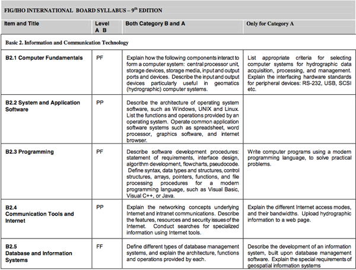
10.11.2010 12:38
Another scientist starts blogging
Roi Granot and I were office
makes for a time at SIO. He has just setup a Nanoblogger
blog/workblog (wog?)...
Roi's worklog over at ipgp.fr
Roi's worklog over at ipgp.fr
10.10.2010 14:52
Removing TuneUp from a Mac
The new version of Azarus/Vuze comes
with some crapware called "Tune Up" or "TuneUp". It does not warn
you enough that the Tune Up package will be installed at the same
time until it's already done. The uninstaller is burried.
Apple Discussions: Topic : How do I uninstall TuneUp?:
Apple Discussions: Topic : How do I uninstall TuneUp?:
open ~/Library/Application\ Support/TuneUp_Support/TuneUp_UninstallerI made the mistake of trashing /Applications/TuneUp. The uninstaller is too stupid to handle the app being missing. I also found this cruft:
mdfind TuneUp | grep $USER
~/Library/Application\ Support/{TuneUp_Support,TuneUpMedia_Gecko}
~/Library/Preferences/TuneUpMediaPreferences/TuneUpPreferences.xml
~/Library/Preferences/com.TuneUpMedia.TuneUp.plist
~/Library/TuneUpMedia
~/Library/Caches/TuneUpMedia_Gecko
~/Library/Caches/ TuneUp # Yes, these jokers put a space in there
~/Library/Preferences/TuneUpMediaPreferences
~/Library/Caches/com.TuneUpMedia.TuneUp
~/Library/iTunes/iTunes Plug-ins/TuneUp/TuneUp Visualizer.bundle
~/Library/iTunes/iTunes Plug-ins/TuneUp
Good riddance!10.10.2010 07:28
Fall in the Seacoast Area
The fall colors are just getting
going in the Seacoast area. I woke up to this across the
street.
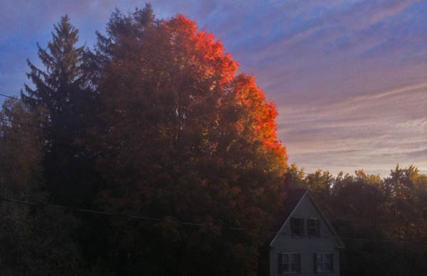
10.09.2010 15:04
NGDC BAG work flow
During my visit to NGDC last week, my
goal was to work them and transfer the knowledge of my experience
of converting BAGs to a Google Earth visualization. The goals of
this visualization are:
First an aside about getting the software running...
Many government computer systems today come with very strict auditing requirements before any software is installed. While this is a good thing, the federal government does not have a program to pre-emptively inspect software for its users. It would be awesome if there was a group in the government that went through all the packages in Ubuntu, RedHad, CentOS, and Fedora to produce documentation as to the hazards and suitability of these packages. Then system admin teams could quickly consult this documentation to see how a particular program or library impacted their risk assessment. The risk of installing something like h5py (python code to read HDF5 binary data) is negligible on a machine where users are allowed to write software. This would help NOAA, NASA, USCG/DHS, USGS, etc manage systems more efficiently.
We gave a quick go at compiling everything from source and immediately ran into trouble. Compiling lots of packages with many dependencies from source takes a lot of time to do for anyone. We hit a bunch of problems and realized that it would take a few days (that we didn't have) to work through them all.
So now, you can see that we have a slight problem with rapid technology transfer to a place like NGDC that must maintain a stable network environment no matter what. The solution that we came up to (which was inspired by my working with Trey Smith at NASA Ames and the use of Debian VMs by the ERMA team this last summer), is to create a virtual Linux appliance. In that world, I can install software properly. Here is what I did to create a virtual machine that can turn a BAG into a Google Earth visualization.
First I looked at starting with a RedHat Enterprise Linux (REL) VM. I realized that I would have to start from scratch with a NOAA CD or DVD of REL. While I could have gone and borrowed one of their disks, this was just time I didn't have. I looked next at CentOS. There was an image available on the VMWare site, but it was going to take 6 hours to download. I took the next best thing - Fedora 13 is not too far from REL and has a lot newer versions of the software packaged, so I could hopefully avoid some of the building from source.
I downloaded Fedora 13 lean and snappy desktop by quoTrader and got going. I was using VMWare Fusion 3.1.1 on my 2007 MacBook Pro with OSX 10.6.4. Task number one was to do a system wide update. This made the VMWare image much, much larger, but it is important to have all the latest patches in.
Next it was time to grab my source code for the bag-py and a sample bag to try. This is not the best BAG for a demo, but it proved things work.
http://vislab-ccom.unh.edu/~schwehr/bags/icons/
Finally... some security issues to look after: change the password for "user", setup user with sudo, and make root not be able to login with a password.
We were able to copy the VMWare image to a REL 5.5 government machine and build a Google Earth visualization in the vm. I didn't upload the histogram or preview images up to my server, so those are missing, but we now have something that the team can try out and they can decide how to migrate to re-implement the process to suit their needs. Other countries are welcome to what I have done and I encourage them to build their own system for visualizing their archives of BAGs.
Another note: It is very interesting to learn about Goovy, which looks like an interesting way to take advantage of Java and the JVM without having the pain of writing actual Java code. I'm still going to stick with python, but Groovy looks like it has adopted some of what make Python and Ruby great languages.
- Improve discovery of this category of bathymetric data by non-hydrographers
- Show off the hard work of all the NOAA survey folks
- Provide a quick way to check the quality and style of data in a bag to see if it is suitable for a particular use
First an aside about getting the software running...
Many government computer systems today come with very strict auditing requirements before any software is installed. While this is a good thing, the federal government does not have a program to pre-emptively inspect software for its users. It would be awesome if there was a group in the government that went through all the packages in Ubuntu, RedHad, CentOS, and Fedora to produce documentation as to the hazards and suitability of these packages. Then system admin teams could quickly consult this documentation to see how a particular program or library impacted their risk assessment. The risk of installing something like h5py (python code to read HDF5 binary data) is negligible on a machine where users are allowed to write software. This would help NOAA, NASA, USCG/DHS, USGS, etc manage systems more efficiently.
We gave a quick go at compiling everything from source and immediately ran into trouble. Compiling lots of packages with many dependencies from source takes a lot of time to do for anyone. We hit a bunch of problems and realized that it would take a few days (that we didn't have) to work through them all.
So now, you can see that we have a slight problem with rapid technology transfer to a place like NGDC that must maintain a stable network environment no matter what. The solution that we came up to (which was inspired by my working with Trey Smith at NASA Ames and the use of Debian VMs by the ERMA team this last summer), is to create a virtual Linux appliance. In that world, I can install software properly. Here is what I did to create a virtual machine that can turn a BAG into a Google Earth visualization.
First I looked at starting with a RedHat Enterprise Linux (REL) VM. I realized that I would have to start from scratch with a NOAA CD or DVD of REL. While I could have gone and borrowed one of their disks, this was just time I didn't have. I looked next at CentOS. There was an image available on the VMWare site, but it was going to take 6 hours to download. I took the next best thing - Fedora 13 is not too far from REL and has a lot newer versions of the software packaged, so I could hopefully avoid some of the building from source.
I downloaded Fedora 13 lean and snappy desktop by quoTrader and got going. I was using VMWare Fusion 3.1.1 on my 2007 MacBook Pro with OSX 10.6.4. Task number one was to do a system wide update. This made the VMWare image much, much larger, but it is important to have all the latest patches in.
yum -y updateOn my old machine, this took more than an hour. Then I started working through all the required software.
yum -y install lxml ipython libgeotiff numpy ImageMagick yum -y install hdf5 hdf5-devel git gcc gcc-c++ python-devel yum -y install sqlite-devel emacs wget proj proj-devel yum -y install python-matplotlibLooking at gdal in Fedore, I discoved it was too old to have bag support (1.6.x), so I built 1.7.2 from source.
su -l # password is password wget http://download.osgeo.org/gdal/gdal-1.7.2.tar.gz tar xf gdal-1.7.2.tar.gz cd gdal-1.7.2 ./configure --with-python make # takes quite a while make install ipython import osgeo.gdal exitHere is where I found out that the default for gdal is to install in /usr/local/, but the gdal python module is to look for the gdal shared library is to look in /usr/lib. To fix that:
cd /usr/lib ln -s /usr/local/lib/libgdal.so.1 .Next, I found that Fedora 13 does not have packages for h5py and pyproj. I fixed this, but not in a maintainable way. It would be better to find or make rpms. I could have used python distutil's rpm builder, but I did not think of that at the time.
cd wget http://pyproj.googlecode.com/files/pyproj-1.8.8.tar.gz tar xf pyproj-1.8.8.tar.gz cd pyproj-1.8.8 python setup.py install cd wget http://h5py.googlecode.com/files/h5py-1.3.0.tar.gz tar xf h5py-1.3.0.tar.gz cd h5py-1.3.0 python setup.py installI also tried to install the VMWare tools into the virtual machine, but I could not figure out how to specify the linux kernel headers to make the VMWare installer happy.
Next it was time to grab my source code for the bag-py and a sample bag to try. This is not the best BAG for a demo, but it proved things work.
git clone http://github.com/schwehr/bag-py.git # Read only cd bag-py curl http://surveys.ngdc.noaa.gov/mgg/NOS/coast/H12001-H14000/H12059/BAG/H12059_2m_MLLW_4of6.bag.gz -o H12059_2m_MLLW_4of6.bag.gzI then copied bags_to_kml.bash to bag_to_kml.bash and modified the script to process just one bag. I also changed the path of icons to load from
http://vislab-ccom.unh.edu/~schwehr/bags/icons/
Finally... some security issues to look after: change the password for "user", setup user with sudo, and make root not be able to login with a password.
We were able to copy the VMWare image to a REL 5.5 government machine and build a Google Earth visualization in the vm. I didn't upload the histogram or preview images up to my server, so those are missing, but we now have something that the team can try out and they can decide how to migrate to re-implement the process to suit their needs. Other countries are welcome to what I have done and I encourage them to build their own system for visualizing their archives of BAGs.
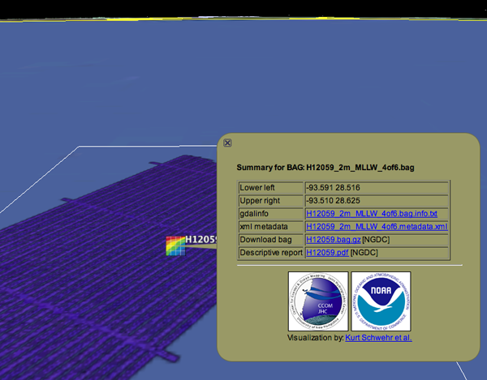
Another note: It is very interesting to learn about Goovy, which looks like an interesting way to take advantage of Java and the JVM without having the pain of writing actual Java code. I'm still going to stick with python, but Groovy looks like it has adopted some of what make Python and Ruby great languages.
10.09.2010 14:26
Adams Point / Jackson Estuarine Lab
Last Sunday, a bunch of us headed out
for a walk in the perfect weather. We first tried Fox Point in
Newington. Apparently, Newinton does not want to share it's parks
with the rest of New Hampshire. We ignored all the signs and went
anyway.
It's pretty, but there isn't that much poit there. I think I have finally found the "historic site" that has a sign on 16... the remnants of the old Piscataqua Bridge.
We headed from Fox Point to Adams Point across Little Bay. We stopped by JEL to check out the current setup of the tide stations. Note that the Ohmex TideMet is setup here.
I am starting to be strong proponent of ditching stilling wells for tide stations. Why are we doing low pass filtering with tide stations with a physical device? If we post process the water levels and log the full rate data, then we can see more the spectrum of energy in the estuary and we can always use software to produce lower frequency values. I would love to hear arguments to the contrary. One of which is that, for radar, we need a heated area to have a water surface without ice.
Here is looking back at Jackson Lab from across the small bay. The fencing across the area is a part of experiments by Win Watson to use video to track horse shoe crab behavior.
We ran into these bugs on the walk. What are they? If you know what these are, please let me know.
Update 2010-10-11: Springmeyer pointed me to the large milkweed bug, which led me to conclude that these are small milkweed bugs (Lygaeus kalmii).
This is the second time that I've seen something like this. I ran into thousands of these back on Sept 11th in Dover on a sidewalk. I had thought that the criters in both images were the same, but clearly they aren't the same. But both have great red color.
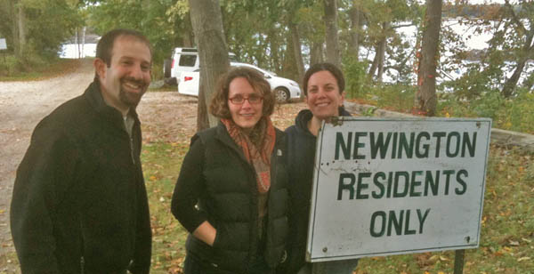
It's pretty, but there isn't that much poit there. I think I have finally found the "historic site" that has a sign on 16... the remnants of the old Piscataqua Bridge.
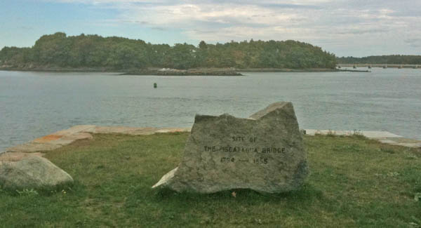
We headed from Fox Point to Adams Point across Little Bay. We stopped by JEL to check out the current setup of the tide stations. Note that the Ohmex TideMet is setup here.
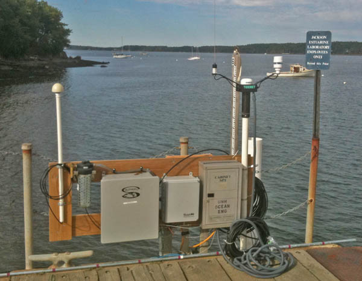
I am starting to be strong proponent of ditching stilling wells for tide stations. Why are we doing low pass filtering with tide stations with a physical device? If we post process the water levels and log the full rate data, then we can see more the spectrum of energy in the estuary and we can always use software to produce lower frequency values. I would love to hear arguments to the contrary. One of which is that, for radar, we need a heated area to have a water surface without ice.
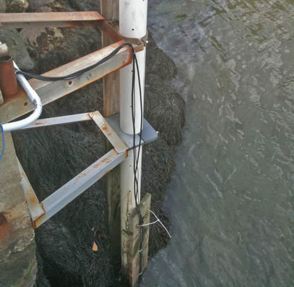
Here is looking back at Jackson Lab from across the small bay. The fencing across the area is a part of experiments by Win Watson to use video to track horse shoe crab behavior.
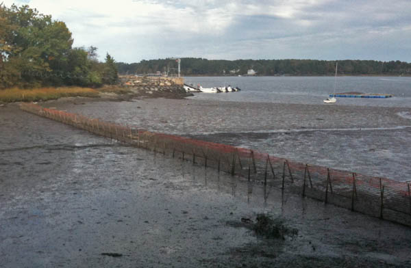
We ran into these bugs on the walk. What are they? If you know what these are, please let me know.
Update 2010-10-11: Springmeyer pointed me to the large milkweed bug, which led me to conclude that these are small milkweed bugs (Lygaeus kalmii).
This is the second time that I've seen something like this. I ran into thousands of these back on Sept 11th in Dover on a sidewalk. I had thought that the criters in both images were the same, but clearly they aren't the same. But both have great red color.
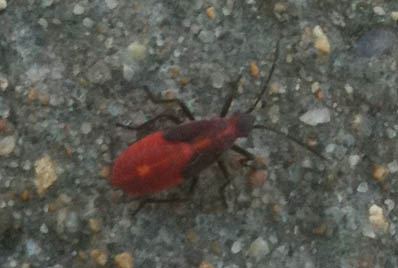
10.09.2010 14:18
Know the Coast at UNH
Last weekend, we had "Know the Coast"
day at UNH. Here are some images from the event at Chase Ocean
Engineering. There were also people visiting the pier at Newcastle
and Jackson Estuarine Lab (JEL).
Monica maning acoustic lab in an aquarium station:
The Phoenix ROV:
Trying to explain global gravity maps and predicted bathymetry...
Me and Dandan discussing the charts.
Monica maning acoustic lab in an aquarium station:
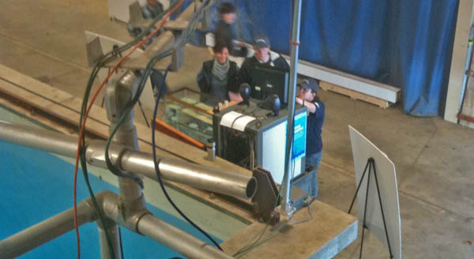
The Phoenix ROV:
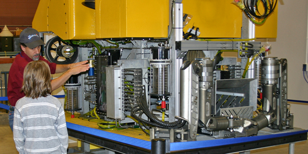
Trying to explain global gravity maps and predicted bathymetry...
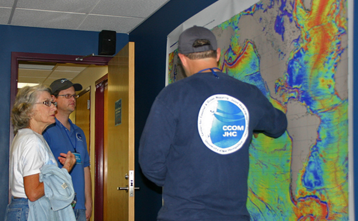
Me and Dandan discussing the charts.
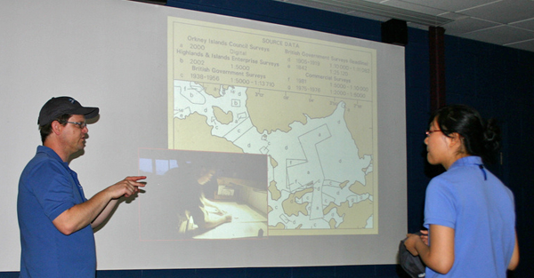
10.09.2010 11:13
Black Laser AUV guide with Art Trembanis as technical advisor
Art Trembanis was the technical
advisor for the Black Laser Learning's
Not in the Manual Guide to Autonomous Underwater Vehicles.
There is a lot of hard won knowledge in this guide.
10.09.2010 10:46
Visiting NOAA NGDC in Boulder, CO
This last week, I spent two days with
NOAA's Natioanl Geophysical Data Center (NGDC) in Boulder, CO. What a
spectacular location. I was busy enough that I never got a chance
to blog for a while. First the NOAA site. The new building has
sandstone from a quarry nearby in the Flatiron mountains.
Marcus gave me a quick tour of the building. It's amazing how much space there is in this very large building and the diversity of research areas is overwhelming. There is the weather forecasting command center and near by the space weather command center.
NIST is located next door. This is quite the government research area.
Sunrise on the flatirons... The hotel was okay. However, they had bikes available for free and the mountains are right in front of you. It was a short walk in to NOAA from the Hotel.
I went for a morning walk just before sunrise near Wonderland Lake on the north side of Boulder. You can't seem them in the iphone photos, but there were lots of deer up on the hill.
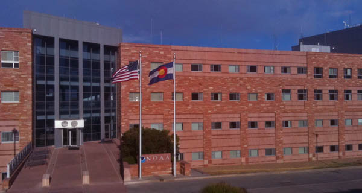
Marcus gave me a quick tour of the building. It's amazing how much space there is in this very large building and the diversity of research areas is overwhelming. There is the weather forecasting command center and near by the space weather command center.
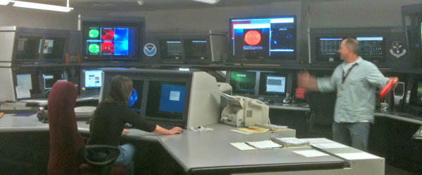
NIST is located next door. This is quite the government research area.
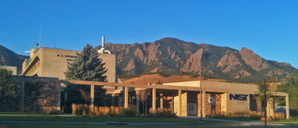
Sunrise on the flatirons... The hotel was okay. However, they had bikes available for free and the mountains are right in front of you. It was a short walk in to NOAA from the Hotel.
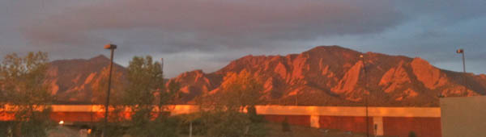
I went for a morning walk just before sunrise near Wonderland Lake on the north side of Boulder. You can't seem them in the iphone photos, but there were lots of deer up on the hill.
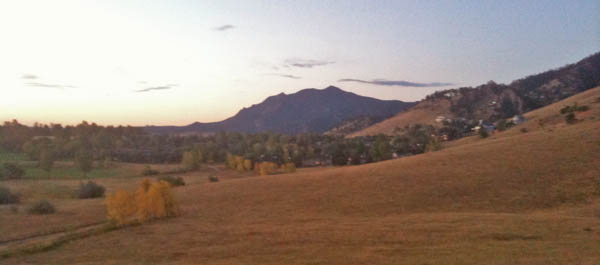
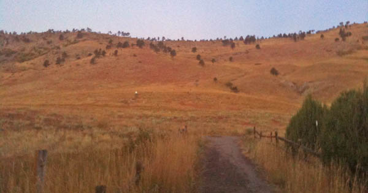
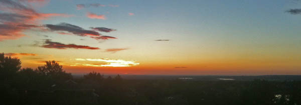
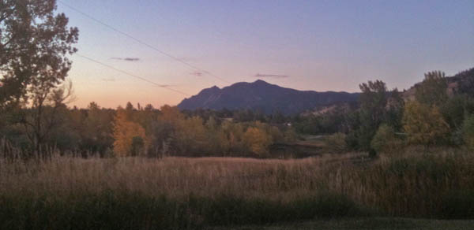
10.02.2010 08:38
USGS Topo Maps as GeoTiffs
Thanks to Peter for pointing me to
Libre Map that has most USGS
Topo Quads online as GeoTiffs. No cost. This is exactly what I was
looking for and the quality appears to be better than what the USGS
is giving out in their GeoPDFs.
e.g. From New Hampshire:
Also, thanks to Claude for the link to the iPhone app PDF Maps, which is free. I haven't had a chance to try this one.
e.g. From New Hampshire:
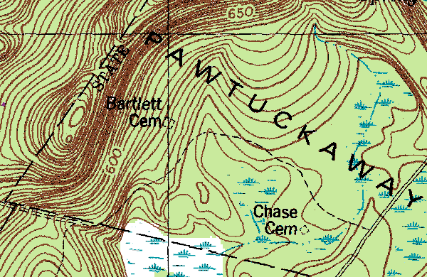
Also, thanks to Claude for the link to the iPhone app PDF Maps, which is free. I haven't had a chance to try this one.
10.01.2010 12:41
Topo from Google Maps in Google Earth
Through the magic of screenshots and
photodraping, I have a working solution. I take a screenshot of
Google Maps in an area with the topo overlay turned on. Then I do
an image overlay in Google Earth and use that as the texture to
drape on the 3D globe. Works pretty well. I would rather Google do
this as a part of Google Earth, but this will work until they do
that. My registration job is not perfect, but it is good enough for
now.
I saw online a company selling the USGS topo DRG's for the US for $5500. You have to be kidding me.
I saw online a company selling the USGS topo DRG's for the US for $5500. You have to be kidding me.
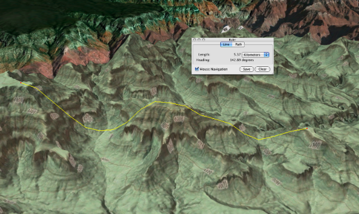
10.01.2010 11:34
Interesting theses from Naval Postgrad School (NPS)
Bruce Schneier has
a pointer to
NPS Homeland Defence master's theses. Based on the titles,
there should be some great material in some of these. Here are the
ones that seem the most relevant to CCOM/JHC:
Identifying Best Practices In The Dissemination Of Intelligence To First Responders In The Fire And EMS Services. Creating Unity Of Effort In The Maritime Domain: The Case For The Maritime Operational Threat Response (MOTR) Plan. Where Do I Start? Decision-Making in Complex Novel Environments. Improving Disaster Emergency Communication. Formal Critiques And After Action Reports From Conventional Emergencies: Tools For Homeland Security Training And Education Arctic Region Policy: Information Sharing Model Options Making Sense In The Edge Of Chaos: A Framework For Effective Initial Response Efforts To Large-Scale IncidentsI've never looked through the NPS library before. Perhaps I should.
10.01.2010 07:36
What did the USGS do to topo maps?
Update Oct 2: See my newer
posts where I find ways around this issue.
This is very frustrating. I love USGS Topo Maps. In the field, I have spent a ton of time staring at them and adding field geology to them. I thought it would be easy to go to the USGS web site these days and grab digital products that would totally rock. I was wrong. I was hoping that I could grab properly done GeoTIFFs and be able to hit the ground running with gdal to pick out the locations I needed. Instead, I have spent a lot of hours getting frustrated. Here is what I found.
Most of this will be on Mac OSX 10.6.4. I will note the Windows sections
I started at http://topomaps.usgs.gov/. That page made me think that I need to be looking at their Digital Raster Graphic (DRG) page. This is looking good. The page says that the maps were scanned at 250 DPI - that should be okay. But wait, the description and ordering page is a Broken Link. Right below that is a link to Download free GeoPDF versions from the USGS Store. GeoPDF is a trademarked name of TerraGo. This doesn't sound good. This really is Geospatial PDF which actually has has some info about it. Looking at the wikipedia page for Geospatial PDF, I realize I am heading for trouble. There are lots of apps that produce Geospatial PDFs, but there are few that can read them. But, wohoo, GDAL is on the list that will read Geospatial PDF. So it is time to try to download some data.
The "locator" URL above redirected me to the USGS store. Wee... I can now click on "Find, Order or Download FREE Topographic Maps!". This page is overly complicated and not at all what I expected.
I navigate in to the Grand Canyon and click on the radio button "THEN () MARK POINTS". Yeah, I didn't see that at first. Um... nothing changed on the map. Weird. I tried clicking on the map and select Google's Hydrid so I can actually see what I am doing. There is now a placemark on the screen.
I first tried a 30 minute and larger quad, but that was painful. Here I'm trying a 7.5 minute quad. But why is a 30x60 showing up with the 7.5 and 15 minute quads selected? I also tried the US Topo and "Digital Maps - Beta". This at least lets me see the quad boundaries. I'm going to try downloading the Havasuipai Point since this is a 2009 product and will hopefully be better than the abysmal Grand Canyon. The download link is strange in that I'm getting a zip file of a PDF.
the actual link that will give you a file called gda_5096863.zip. Unzipping this file shows us that the zip compression is not helping much.
First Acrobat Reader 9. First it wants a plugin. I don't like that but okay. 2nd, this is not a topo map. I love orthophotos, but that was not what I was looking for.
Time to try to get the plugin. Oh great, no Mac support and not even a mention of Linux. This is getting worse and worse.
I am going to revert back to the 30x60 Grand Canyon topo. And see if I can do anything with it. It has horrible JPG artifacts, but at least it is a topographic map.
In Acrobat Pro 8, I can at least see the Geospatial PDF metadata:
I saved out the file and here is what the "XMP" file looks like:
Acrobat Pro on the Mac with the full map:
Trying the MAP2PDF TerraGo tool in Acrobat Pro on Windows XP gave a toolbar for geospatial notes and measuring capabilities, but there was no ability other than to export a normal (non-Geo) tiff. Pretty useless. It's not even worth the time to make a screenshot and getting back to my mac to include in the blog post.
I figured I would look to see if there is a Google Earth tiled version of the map aleady, and there is.
http://www.usgsquads.com/downloads/KMZ/USGS_24k_topo_index_with_topo_base.kmz
Turns out that this is even worse. This is one of the poorest examples of a tiled view that I've seen. It is supper slow to load, is horribly fuzzy, and doesn't behave right with flying around.
Hopefully I can either georeference the tiff images by hand or maybe I can finally figure out how to properly build poppler 0.14.3 and get it integrated right with gdal's svn head. I tried CentOS, Ubuntu 9.10, and Mac OSX 10.6 with fink 32 bit and in all cases I hit roadblocks that I have yet to figure out.
Definitely frustrating. No wonder Geospatial PDF has not taken off. I don't mind that the USGS provides Geospatial PDFs, but they need to 1) step up the support in both free and commercial tools for consuming these, 2) they need to provide something like high quality GeoTIFFs in addition to the PDF, and 3) create better interfaces for getting at the data.
This is very frustrating. I love USGS Topo Maps. In the field, I have spent a ton of time staring at them and adding field geology to them. I thought it would be easy to go to the USGS web site these days and grab digital products that would totally rock. I was wrong. I was hoping that I could grab properly done GeoTIFFs and be able to hit the ground running with gdal to pick out the locations I needed. Instead, I have spent a lot of hours getting frustrated. Here is what I found.
Most of this will be on Mac OSX 10.6.4. I will note the Windows sections
I started at http://topomaps.usgs.gov/. That page made me think that I need to be looking at their Digital Raster Graphic (DRG) page. This is looking good. The page says that the maps were scanned at 250 DPI - that should be okay. But wait, the description and ordering page is a Broken Link. Right below that is a link to Download free GeoPDF versions from the USGS Store. GeoPDF is a trademarked name of TerraGo. This doesn't sound good. This really is Geospatial PDF which actually has has some info about it. Looking at the wikipedia page for Geospatial PDF, I realize I am heading for trouble. There are lots of apps that produce Geospatial PDFs, but there are few that can read them. But, wohoo, GDAL is on the list that will read Geospatial PDF. So it is time to try to download some data.
The "locator" URL above redirected me to the USGS store. Wee... I can now click on "Find, Order or Download FREE Topographic Maps!". This page is overly complicated and not at all what I expected.
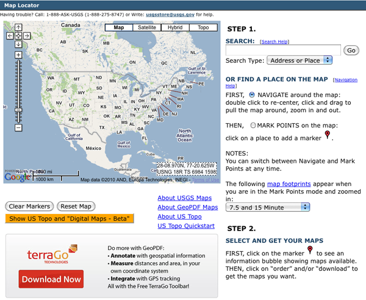
I navigate in to the Grand Canyon and click on the radio button "THEN () MARK POINTS". Yeah, I didn't see that at first. Um... nothing changed on the map. Weird. I tried clicking on the map and select Google's Hydrid so I can actually see what I am doing. There is now a placemark on the screen.
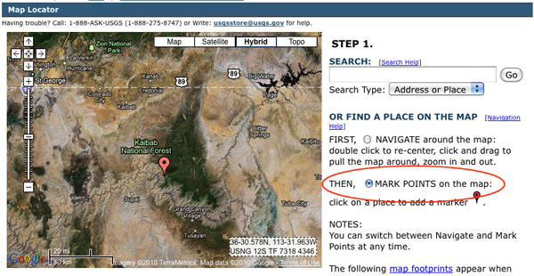
I first tried a 30 minute and larger quad, but that was painful. Here I'm trying a 7.5 minute quad. But why is a 30x60 showing up with the 7.5 and 15 minute quads selected? I also tried the US Topo and "Digital Maps - Beta". This at least lets me see the quad boundaries. I'm going to try downloading the Havasuipai Point since this is a 2009 product and will hopefully be better than the abysmal Grand Canyon. The download link is strange in that I'm getting a zip file of a PDF.
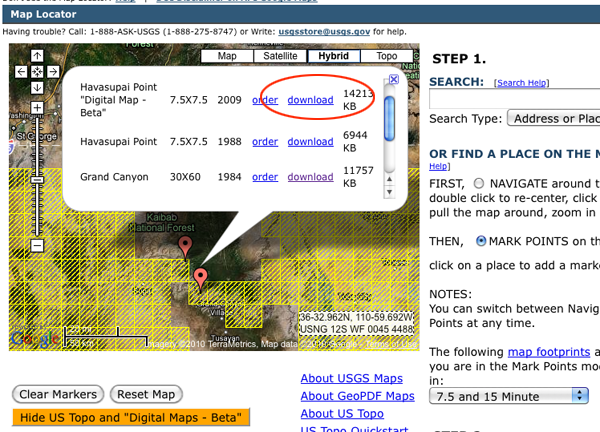
the actual link that will give you a file called gda_5096863.zip. Unzipping this file shows us that the zip compression is not helping much.
ls -l gda_5096863.zip AZ_Havasupai_Point_20090619_OM_geo.pdf 14554767 2010-10-01 06:58 AZ_Havasupai_Point_20090619_OM_geo.pdf 14200846 2010-10-01 07:59 gda_5096863.zipTime to give it a little look over from the command line:
file AZ_Havasupai_Point_20090619_OM_geo.pdf AZ_Havasupai_Point_20090619_OM_geo.pdf: PDF document, version 1.6 identify AZ_Havasupai_Point_20090619_OM_geo.pdf # This took 20-30 seconds on my machine. AZ_Havasupai_Point_20090619_OM_geo.pdf PDF 1566x2088 1566x2088+0+0 16-bit Bilevel DirectClass 400KiB 0.070u 0:01.019 gdalinfo AZ_Havasupai_Point_20090619_OM_geo.pdf ERROR 4: `AZ_Havasupai_Point_20090619_OM_geo.pdf' not recognised as a supported file format. gdalinfo failed - unable to open 'AZ_Havasupai_Point_20090619_OM_geo.pdf'.It looks like gdal as I have it setup in fink (1.7.2-3) is not going to work. Based in GDAL's Geosptial PDF page that PDF support will start in GDAL 1.8 and that it will require a version of popplar that is not yet in fink. Time to try other tools.
First Acrobat Reader 9. First it wants a plugin. I don't like that but okay. 2nd, this is not a topo map. I love orthophotos, but that was not what I was looking for.
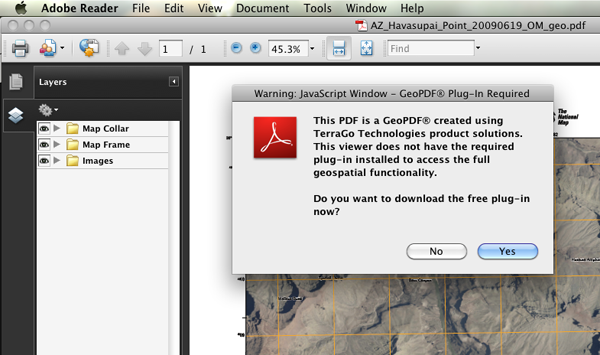
Time to try to get the plugin. Oh great, no Mac support and not even a mention of Linux. This is getting worse and worse.
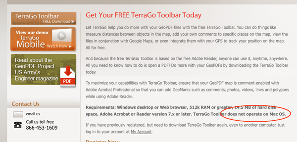
I am going to revert back to the 30x60 Grand Canyon topo. And see if I can do anything with it. It has horrible JPG artifacts, but at least it is a topographic map.
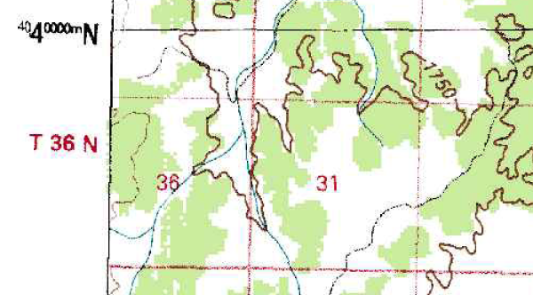
In Acrobat Pro 8, I can at least see the Geospatial PDF metadata:
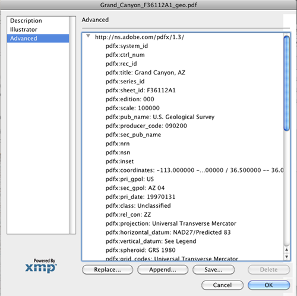
I saved out the file and here is what the "XMP" file looks like:
<rdf:Description rdf:about=""
xmlns:pdfx="http://ns.adobe.com/pdfx/1.3/">
<pdfx:system_id/>
<pdfx:ctrl_num/>
<pdfx:rec_id/>
<pdfx:title>Grand Canyon, AZ</pdfx:title>
<pdfx:series_id/>
<pdfx:sheet_id>F36112A1</pdfx:sheet_id>
<pdfx:edition>000</pdfx:edition>
<pdfx:scale>100000</pdfx:scale>
<pdfx:pub_name>U.S. Geological Survey</pdfx:pub_name>
<pdfx:producer_code>090200</pdfx:producer_code>
<pdfx:sec_pub_name/>
<pdfx:nrn/>
<pdfx:nsn/>
<pdfx:inset/>
<pdfx:coordinates>-113.000000 -- -112.000000 / 36.500000 -- 36.000000</pdfx:coordinates>
<pdfx:pri_gpol>US</pdfx:pri_gpol>
<pdfx:sec_gpol>AZ 04</pdfx:sec_gpol>
<pdfx:pri_date>19970131</pdfx:pri_date>
<pdfx:class>Unclassified</pdfx:class>
<pdfx:rel_con>ZZ</pdfx:rel_con>
<pdfx:projection>Universal Transverse Mercator</pdfx:projection>
<pdfx:horizontal_datum>NAD27/Predicted 83</pdfx:horizontal_datum>
<pdfx:vertical_datum>See Legend</pdfx:vertical_datum>
<pdfx:spheroid>GRS 1980</pdfx:spheroid>
<pdfx:grid_codes>Universal Transverse Mercator</pdfx:grid_codes>
<pdfx:contour_type>See Legend</pdfx:contour_type>
<pdfx:contour_units>meters</pdfx:contour_units>
<pdfx:ll_lat>36.000000</pdfx:ll_lat>
<pdfx:ll_long>-113.000000</pdfx:ll_long>
<pdfx:ur_lat>36.500000</pdfx:ur_lat>
<pdfx:ur_long>36.500000</pdfx:ur_long>
<pdfx:pdf_version>1.6</pdfx:pdf_version>
</rdf:Description>
So there is definitely projection info in there.Acrobat Pro on the Mac with the full map:
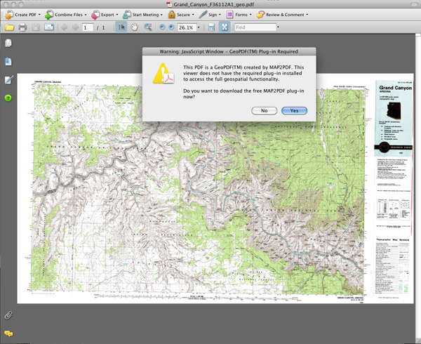
Trying the MAP2PDF TerraGo tool in Acrobat Pro on Windows XP gave a toolbar for geospatial notes and measuring capabilities, but there was no ability other than to export a normal (non-Geo) tiff. Pretty useless. It's not even worth the time to make a screenshot and getting back to my mac to include in the blog post.
I figured I would look to see if there is a Google Earth tiled version of the map aleady, and there is.
http://www.usgsquads.com/downloads/KMZ/USGS_24k_topo_index_with_topo_base.kmz
Turns out that this is even worse. This is one of the poorest examples of a tiled view that I've seen. It is supper slow to load, is horribly fuzzy, and doesn't behave right with flying around.
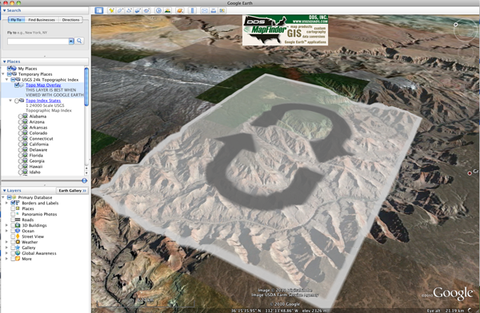
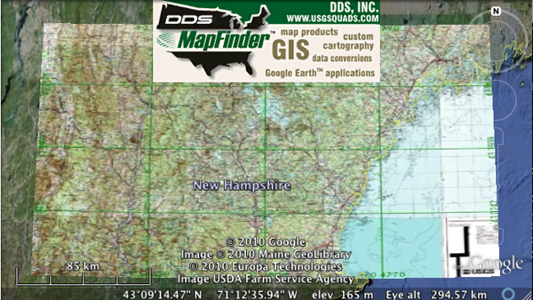
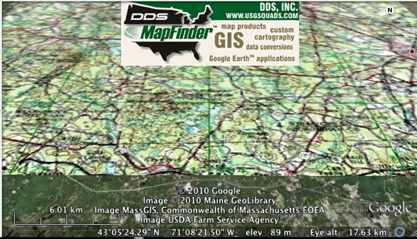
Hopefully I can either georeference the tiff images by hand or maybe I can finally figure out how to properly build poppler 0.14.3 and get it integrated right with gdal's svn head. I tried CentOS, Ubuntu 9.10, and Mac OSX 10.6 with fink 32 bit and in all cases I hit roadblocks that I have yet to figure out.
Definitely frustrating. No wonder Geospatial PDF has not taken off. I don't mind that the USGS provides Geospatial PDFs, but they need to 1) step up the support in both free and commercial tools for consuming these, 2) they need to provide something like high quality GeoTIFFs in addition to the PDF, and 3) create better interfaces for getting at the data.